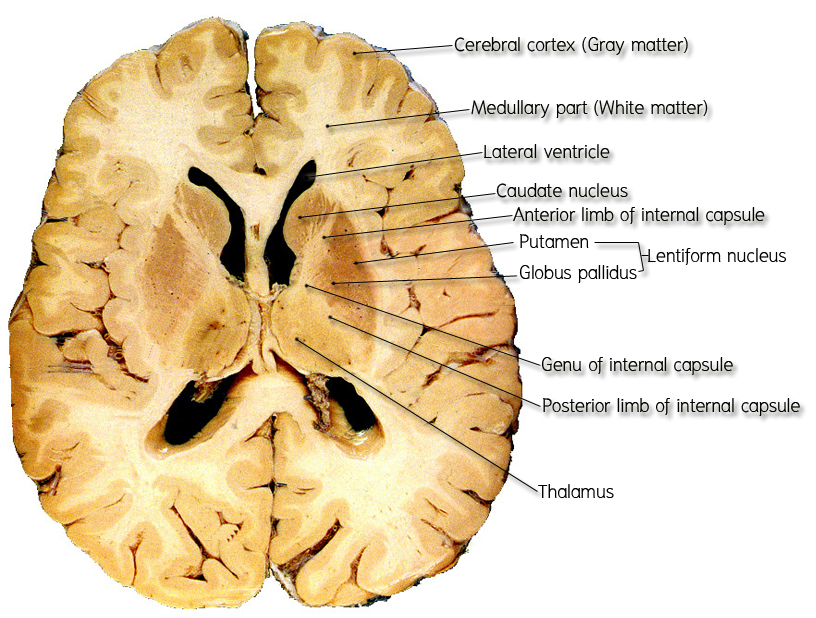
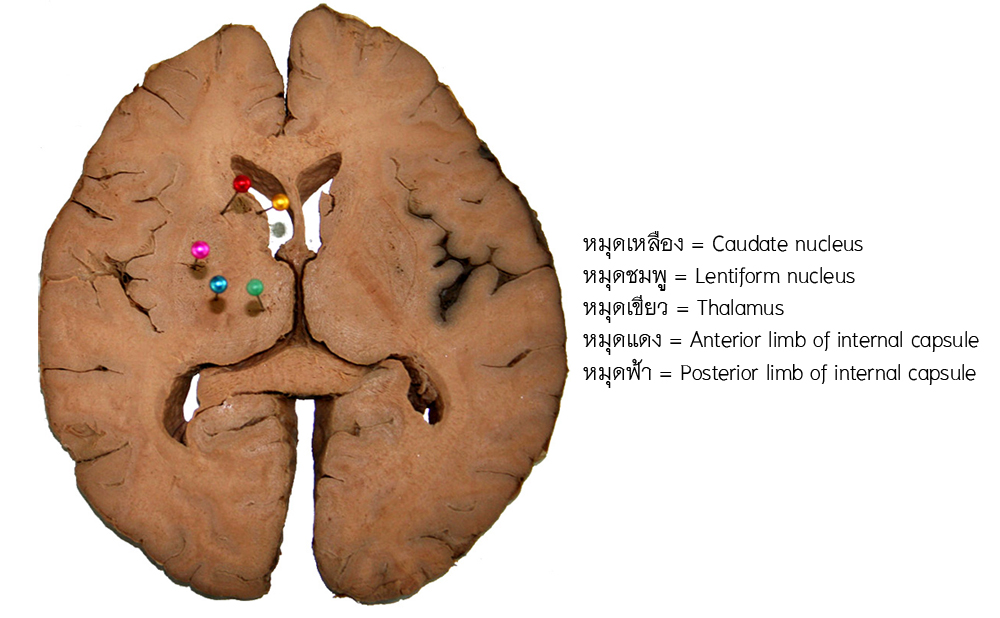

Cerebral hemisphere
สมองใหญ่แต่ละซีกประกอบด้วย
- Cortical part เป็นชั้นของเปลือกสมอง (cerebral cortex) ที่อยู่ด้านนอกประกอบด้วย gray matter
- Medullary part เป็นชั้นที่ประกอบด้วยกลุ่มของ nerve fibers มากมายซึ่งประกอบกันเป็น white matter หรือ medullary region ของสมองใหญ่
- Nuclear part เป็น gray matter masses ที่ฝังอยู่ใน medullary white matter เช่น caudate nucleus, lentiform nucleus และ amygdaloid nucleus

ศึกษาจากสมองดอง ให้นักศึกษาชี้แสดงส่วนต่างๆ ของเนื้อสมองใน cerebral hemisphere
